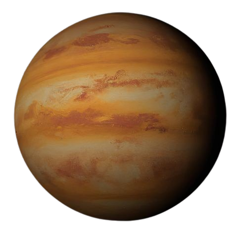

Venus adalah tetangga terdekat Bumi yang sering disebut sebagai 'Saudari
Kembar Bumi' karena ukurannya mirip.
Tapi jangan tertipu! Planet ini jauh dari ramah. Venus adalah planet
terpanas di tata surya dengan atmosfer
super tebal yang penuh karbon dioksida, membuatnya seperti neraka
berlapis awan. Tapi,
Venus tetap menawan dengan cahayanya yang terang di langit malam.
Data Singkat yang Keren

Diameter: 12.104 km (hampir sama dengan Bumi).
Jarak dari Matahari: 108 juta km.
Durasi Hari: 243 hari Bumi (lebih lama dari tahunnya!).
Durasi Tahun: 225 hari Bumi.
Suhu Permukaan: 465°C (panas terus, nggak ada ampun).
Gravitasi: 90% dari gravitasi Bumi (nyaris serasa di rumah).
Rahasia Keren Venus....
Venus adalah planet paling terang di langit malam, jadi sering disebut
sebagai 'Bintang Kejora
Rotasi Venus terbalik! Matahari terbit di barat dan tenggelam di
timur.
Hari di Venus lebih lama daripada satu tahunnya, jadi kalau kamu tinggal
di sana, sehari rasanya kayak setahun.
Awan Venus penuh asam sulfat jadi jangan pernah coba jalan-jalan di
sana!
Seberapa Kenal Kamu dengan Venus?
Bagaimana perbandingan durasi hari dan tahun di Venus?